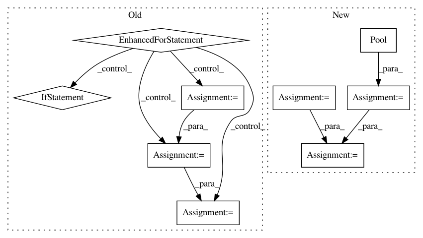

2e24c5e8eac125d5b42b21ebd7353b8ec75cc27d,skater/core/global_interpretation/feature_importance.py,FeatureImportance,feature_importance,#FeatureImportance#Any#Any#Any#,19
Before Change
feature_names=self.data_set.feature_ids,
index=self.data_set.index)
for feature_id in self.data_set.feature_ids:
// collect perturbations
if self.data_set.feature_info[feature_id]["numeric"]:
samples = self.data_set.generate_column_sample(feature_id, n_samples=n, method="stratified")
else:
samples = self.data_set.generate_column_sample(feature_id, n_samples=n, method="random-choice")
copy_of_data_set[feature_id] = samples
// predict based on perturbed values
new_predictions = model_instance.predict_subset_classes(copy_of_data_set.data, filter_classes)
importance = self.compute_importance(new_predictions,
original_predictions,
self.data_set[feature_id],
samples)
importances[feature_id] = importance
// reset copy
copy_of_data_set[feature_id] = self.data_set[feature_id]
importances = pd.Series(importances).sort_values(ascending=ascending)
if not importances.sum() > 0:
self.interpreter.logger.debug("Importances that caused a bug: {}".format(importances))
After Change
// prep for multiprocessing
predict_fn = modelinstance._get_static_predictor()
n_jobs = None if n_jobs < 0 else n_jobs
arg_list = self.data_set.feature_ids
// just a function of feature_id
fi_func = partial(input_data=self.data_set.data.copy(),
estimator_fn=predict_fn,
original_predictions=original_predictions,
feature_info=self.data_set.feature_info,
feature_names=self.data_set.feature_names,
n=n)
executor_instance = Pool(n_jobs)
try:
importances = executor_instance.map(pd_func, arg_list)
except:
self.interpreter.logger.debug("Multiprocessing failed, going single process")
importances = map(pd_func, arg_list)
finally:
In pattern: SUPERPATTERN
Frequency: 3
Non-data size: 9
Instances
Project Name: datascienceinc/Skater
Commit Name: 2e24c5e8eac125d5b42b21ebd7353b8ec75cc27d
Time: 2017-06-01
Author: aikramer2@gmail.com
File Name: skater/core/global_interpretation/feature_importance.py
Class Name: FeatureImportance
Method Name: feature_importance
Project Name: rusty1s/pytorch_geometric
Commit Name: cce4382f73d0976fb94b003949acd668377a0869
Time: 2020-04-03
Author: j-magnusson@t-online.de
File Name: torch_geometric/utils/geodesic.py
Class Name:
Method Name: geodesic_distance
Project Name: rusty1s/pytorch_geometric
Commit Name: 17e56b9100275068c7ad0e74c0bf247866da846f
Time: 2020-05-31
Author: j-magnusson@t-online.de
File Name: torch_geometric/utils/geodesic.py
Class Name:
Method Name: geodesic_distance